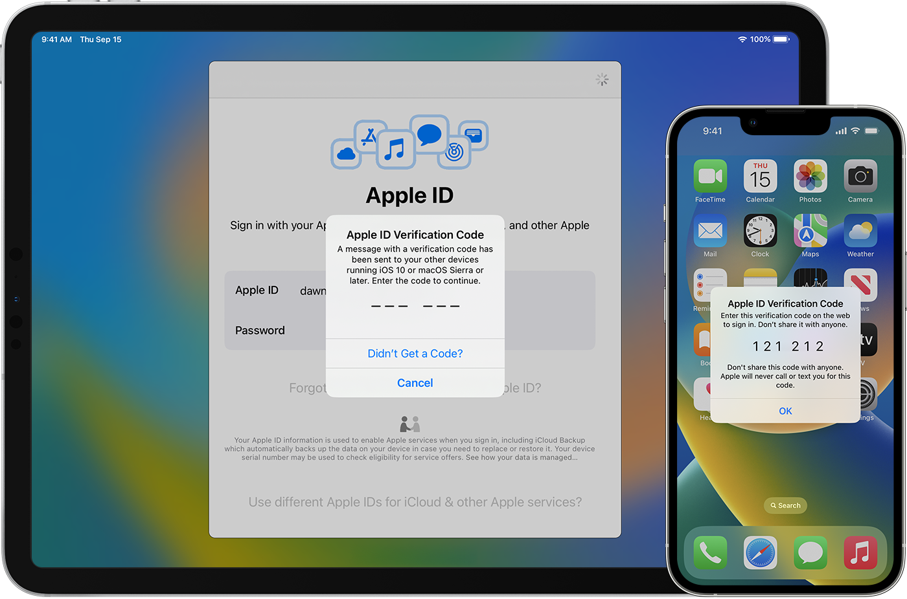

| Security Feature | Description | |
|---|---|---|
|
Touch ID is a fingerprint recognition feature that provides a secure and easy way to unlock your device, make purchases, and more. It can also be used to lock and unlock password-protected notes on iPhone and iPad. | Learn More |
| Face ID is a facial recognition feature that allows biometric authentication for unlocking a device, making payments, accessing sensitive data and more. Apple claims that Face ID is statistically more advanced than Touch ID fingerprint scanning. It exhibits significantly fewer false positives. | Learn More | |
|  | Two-Factor Authentication is an extra layer of security that requires both your password and a verification code to sign in to your account. | Learn More |
Apple is committed to protecting the privacy of its users and has implemented several policies and measures to safeguard their personal information. Apple's privacy policies include end-to-end encryption for iMessage and FaceTime, and the use of differential privacy to ensure that user data is anonymized and cannot be traced back to individuals. In addition, Apple has implemented strict rules for third-party developers who want to access user data, requiring them to obtain user consent and follow specific guidelines.
Apple's commitment to privacy has been recognized by privacy advocates and industry experts, and the company continues to innovate and improve its privacy policies to ensure the security of its users' data.
Apple has formed partnerships with several organizations dedicated to online privacy and security to further its commitment to protecting its users' data. One notable partnership is with the Electronic Frontier Foundation (EFF), a non-profit organization that focuses on defending civil liberties in the digital world.
These partnerships allow Apple to collaborate with experts in the field and stay up-to-date with the latest developments in online privacy and security. By working with these organizations, Apple aims to provide its users with the highest level of security and privacy protection possible.